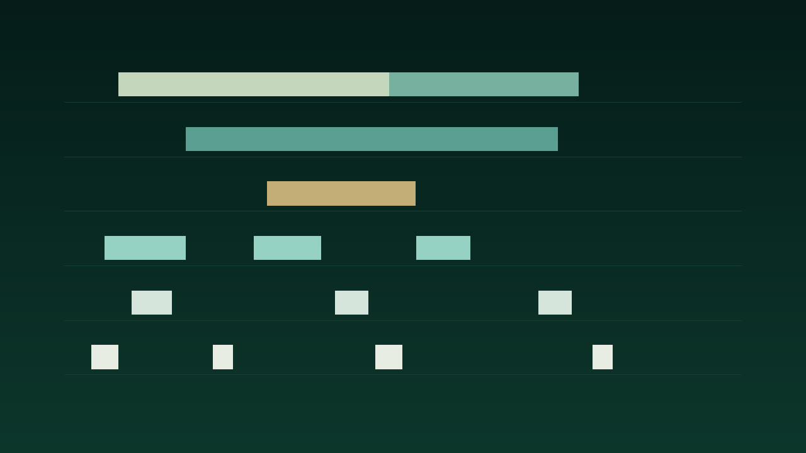

Four kits · two variations · 32-bar arrangements
Low Water
Patient downtempo development, evolving pitch fields, layered detail, and spacious interplay. The BPM range is a project choice, not a claim that these files are authentic genre productions.

atmosphere harmonic field motif bass percussion drums
Reading the MIDI.
Drums and percussion use channel 10 and the maps in this catalog. Bass is monophonic, MIDI 28 to 55. Motif is monophonic, MIDI 60 to 84. Harmonic field is MIDI 48 to 76, at most four notes. Atmosphere is MIDI 52 to 88, at most three notes, written as notes. C4 is 60.
Kit map
- k01 Low Water, 82 BPM, D dorian, tonic D. Parts are 8 bars. The arrangement is 32 bars. Half-time pocket: kick on beat 1, snare on beat 3, hats only on the and of 2 and the last 16th. The bass leaps D to A, then settles. The motif rises D F A B and leaves bar 3 empty. Harmony holds Dm11, then G9, then a C major color, then a thinner Dm. Atmosphere is a few long high notes with silence in the last bar. Limitations: Variation A and variation B are alternatives. Do not stack them. Do not mix parts from different kits: the tempos and collections differ. The 32-bar arrangement uses variation A only. Closed and open hats never overlap, and no hat-choke controller is written.
- k02 Glass Orbit, 96 BPM, A aeolian, tonic A. Parts are 8 bars. The arrangement is 32 bars. The kick pushes the and of 2 as well as beat 1. Claves sit on beats 2 and 4. Bass is a three-note pedal that changes root each bar and cadences on B. The motif descends in five short notes for four bars, then answers with fewer longer notes. Harmony staggers root, fifth, third, and seventh, one chord a bar. Atmosphere enters late in every other bar. Limitations: Variation A and variation B are alternatives. Do not stack them. Do not mix parts from different kits: the tempos and collections differ. The 32-bar arrangement uses variation A only. Closed and open hats never overlap, and no hat-choke controller is written.
- k03 Dust Choir, 76 BPM, F mixolydian, tonic F. Parts are 8 bars. The arrangement is 32 bars. Most of the bar is silent. Kick only on odd bars, hat on the even bars, snare on beat 4 of bars 4 and 8. Congas group attacks as 3+3+2 sixteenths twice in the bar. That grouping does not change the 4/4 meter. Bass is one long note per bar. The motif is eight calls spread over eight bars. Harmony is two held chords, F then Bb. Atmosphere is one note every four bars. Limitations: Variation A and variation B are alternatives. Do not stack them. Do not mix parts from different kits: the tempos and collections differ. The 32-bar arrangement uses variation A only. Closed and open hats never overlap, and no hat-choke controller is written. Variation B of the motif uses E4 once, flagged as a departure, then returns to F.
- k04 Night Ferry, 104 BPM, E minor pentatonic plus 9, tonic E. Parts are 8 bars. The arrangement is 32 bars. Faster tempo, still half-time in the kick: beats 1 and 3, with an 8th-note hat and an open hat on beat 4. Woodblocks answer just after each beat. Bass is four short syncopations, including the 9th F#. The motif is a downbeat arrival plus a pickup into the next bar. Harmony lands on beat 2 every two bars: Em9, G, D, Em. Atmosphere pulses a fifth once per bar. Limitations: Variation A and variation B are alternatives. Do not stack them. Do not mix parts from different kits: the tempos and collections differ. The 32-bar arrangement uses variation A only. Closed and open hats never overlap, and no hat-choke controller is written. Variation B of the bass uses C2 once, flagged as a departure, between E and D.
There is no reference-only part. All six roles are core. The arrangements reuse those files. Variation A of each role has its own attack pattern. The four kits are not transpositions of one phrase.
Article draft
DRAFT. Psybient is a note-only MIDI construction kit
Tags: midi, psybient, music-production, composition, ambient
Use either the combined arrangement or the separate parts. Do not stack the part files on top of the combined file.
Files
| Part | Role | Var | Count | BPM | Bars | Notes |
|---|---|---|---|---|---|---|
| k01.drums.a | drums | a | core | 82 | 8 | 33 |
| k01.percussion.a | percussion | a | core | 82 | 8 | 34 |
| k01.bass.a | bass | a | core | 82 | 8 | 17 |
| k01.motif.a | motif | a | core | 82 | 8 | 14 |
| k01.harmonic-field.a | harmonic-field | a | core | 82 | 8 | 15 |
| k01.atmosphere.a | atmosphere | a | core | 82 | 8 | 6 |
| k01.drums.b | drums | b | core | 82 | 8 | 41 |
| k01.percussion.b | percussion | b | core | 82 | 8 | 33 |
| k01.bass.b | bass | b | core | 82 | 8 | 19 |
| k01.motif.b | motif | b | core | 82 | 8 | 16 |
| k01.harmonic-field.b | harmonic-field | b | core | 82 | 8 | 26 |
| k01.atmosphere.b | atmosphere | b | core | 82 | 8 | 15 |
| k02.drums.a | drums | a | core | 96 | 8 | 49 |
| k02.percussion.a | percussion | a | core | 96 | 8 | 18 |
| k02.bass.a | bass | a | core | 96 | 8 | 24 |
| k02.motif.a | motif | a | core | 96 | 8 | 35 |
| k02.harmonic-field.a | harmonic-field | a | core | 96 | 8 | 32 |
| k02.atmosphere.a | atmosphere | a | core | 96 | 8 | 7 |
| k02.drums.b | drums | b | core | 96 | 8 | 49 |
| k02.percussion.b | percussion | b | core | 96 | 8 | 33 |
| k02.bass.b | bass | b | core | 96 | 8 | 16 |
| k02.motif.b | motif | b | core | 96 | 8 | 24 |
| k02.harmonic-field.b | harmonic-field | b | core | 96 | 8 | 16 |
| k02.atmosphere.b | atmosphere | b | core | 96 | 8 | 15 |
| k03.drums.a | drums | a | core | 76 | 8 | 11 |
| k03.percussion.a | percussion | a | core | 76 | 8 | 48 |
| k03.bass.a | bass | a | core | 76 | 8 | 8 |
| k03.motif.a | motif | a | core | 76 | 8 | 8 |
| k03.harmonic-field.a | harmonic-field | a | core | 76 | 8 | 8 |
| k03.atmosphere.a | atmosphere | a | core | 76 | 8 | 2 |
| k03.drums.b | drums | b | core | 76 | 8 | 14 |
| k03.percussion.b | percussion | b | core | 76 | 8 | 12 |
| k03.bass.b | bass | b | core | 76 | 8 | 16 |
| k03.motif.b | motif | b | core | 76 | 8 | 15 |
| k03.harmonic-field.b | harmonic-field | b | core | 76 | 8 | 13 |
| k03.atmosphere.b | atmosphere | b | core | 76 | 8 | 7 |
| k04.drums.a | drums | a | core | 104 | 8 | 89 |
| k04.percussion.a | percussion | a | core | 104 | 8 | 36 |
| k04.bass.a | bass | a | core | 104 | 8 | 32 |
| k04.motif.a | motif | a | core | 104 | 8 | 16 |
| k04.harmonic-field.a | harmonic-field | a | core | 104 | 8 | 15 |
| k04.atmosphere.a | atmosphere | a | core | 104 | 8 | 16 |
| k04.drums.b | drums | b | core | 104 | 8 | 28 |
| k04.percussion.b | percussion | b | core | 104 | 8 | 40 |
| k04.bass.b | bass | b | core | 104 | 8 | 16 |
| k04.motif.b | motif | b | core | 104 | 8 | 16 |
| k04.harmonic-field.b | harmonic-field | b | core | 104 | 8 | 24 |
| k04.atmosphere.b | atmosphere | b | core | 104 | 8 | 6 |
Arrangements
| Kit | BPM | Bars | What the file contains |
|---|---|---|---|
| k01 | 82 | 32 | Low Water variation A arranged over 32 bars. Each musical track is one or more copies of the 8-bar part, placed at the listed bar offsets. |
| k02 | 96 | 32 | Glass Orbit variation A arranged over 32 bars. Each musical track is one or more copies of the 8-bar part, placed at the listed bar offsets. |
| k03 | 76 | 32 | Dust Choir variation A arranged over 32 bars. Each musical track is one or more copies of the 8-bar part, placed at the listed bar offsets. |
| k04 | 104 | 32 | Night Ferry variation A arranged over 32 bars. Each musical track is one or more copies of the 8-bar part, placed at the listed bar offsets. |
Recorded reading
Bars 9-16 of the Low Water arrangement. Eight bars at 82 BPM. The encoded MP3 is 23.41 seconds. preview, not a master. The film is 23.41 seconds and shows preview, not master.
No program changes are encoded. A conventional GM player will normally use its default piano program for pitched channels unless configured otherwise; compatible GM channel 10 percussion is treated separately. Player behavior may vary.
No human listening audition was performed for this build.
The GitHub repository is https://github.com/mizcausevic-dev/psybient and it is public. The catalog page is https://mizcausevic-dev.github.io/psybient/ .